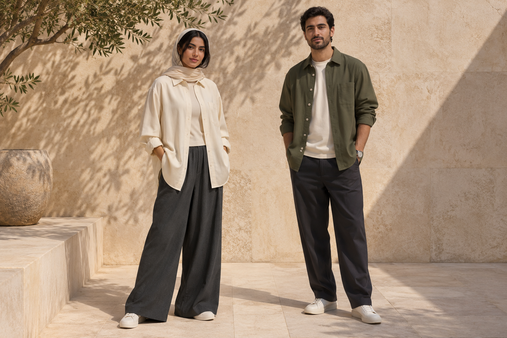

سادگی
رنگهای آرام و جزئیات بهاندازه؛
لباسهایی که راحت کنار هم مینشینند.
بعضی لباسها بیسروصدا بخشی از روز ما میشوند؛
پیراهنی که با آن راحتیم، شلواری که خوب مینشیند
یا بافتی که به ترکیبهای آشنا حس تازهای میدهد.
نگاه الیناستایل از همین لحظههای کوچک شروع میشود.
در این نگاه، پوشاک زنانه و مردانه قرار است به کار
زندگی روزمره بیاید؛ ساده برای ترکیب کردن و همراه
با فضایی برای نشان دادن سلیقهٔ شخصی تو.

رنگهای آرام و جزئیات بهاندازه؛
لباسهایی که راحت کنار هم مینشینند.
از قرار کوتاه تا یک روز پُررفتوآمد؛
انتخاب را با ریتم روزت هماهنگ کن.
به فرم، اندازه و آزادی حرکت دقت کن؛
لباس خوب باید روی تن تو راحت باشد.
یک انتخاب خوب از شناخت نیاز شروع میشود.
پیش از اضافه کردن لباس تازه، به کمدی که داری
و موقعیتهایی که پیش روست فکر کن.
کمتر، بهتر، ماندگارتر.
لباس را برای روز و موقعیتی که در پیش داری انتخاب کن.
راهنمای اندازه، فرم لباس و توضیحات آن را کنار هم بخوان.
با لباسهای کمدت مقایسه کن و جای تکهٔ تازه را پیدا کن.